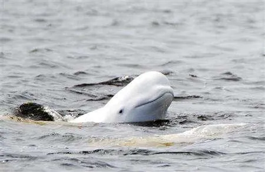
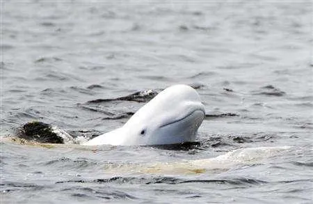

Reino: Animalia
Filo: Chordata
Classe: Mammalia
Ordem: Cetacea
Subordem: Odontoceti
Familia: Monodontidae
Genero: Delphinapterus
Espécie: Delphinapterus Leucas
As belugas são cetaceos muito amigáveis, com uma aparencia carismatica e muito divertidas.
hoje veremos mais sobre belugas, curiosidades, fatos e desmiticar mitos. Veremos sobre nossa querida baleia branca ou conhecida como "BELUGA" ou "beluca" (ela é um dos meus animais favoritos)
Reino: Animalia
Filo: Chordata
Classe: Mammalia
Ordem: Cetacea
Subordem: Odontoceti
Familia: Monodontidae
Genero: Delphinapterus
Espécie: Delphinapterus Leucas
A baleia branca, beluga ou beluca é um cetaceo que vive na parte Ártica do mar, em uma das partes mais frias. Belugas tem certas caracteristicas diferenciadas de outros cetaceos comuns, adaptados completamente para a vida no Ártico, como a falta da nadadeira dorsal. Ela é a única de sua espécie e seu genero, então elas não são golfinhos e nem baleias como muitos pensam.
Caracterizada principalmente por sua cor totalmente branca, falta de nadadeira dorsal e seu carisma, as baleias brancas são normalmente dóceis e amigaveis, os humanos não estaõ em sua dieta, a beluga se alimenta de peixes, crustáceos, e outros invertebrados no mar, agora que você conhece a baleia branca, vamos às curiosidades!!!
1- As Belugas por mais que chamadas de "Baleias Brancas", elas não são baleias e nem golfinhos, como já disse acima, elas são as únicas de sua própia espécie
2- Por mais que sejam chamadas de "Baleias BRANCAS" elas não nascem brancas, elas nascem cinzas e depois ficam brancas, esse processo pode demorar até 8 anos pra se esbranquecer 100%
3- Por mais que sejam um dos poucos cetaceos que tem dente, elas não mastigam suas presas e sim engolem elas inteira.
4- As Belugas comem aproximadamente 27kg de comida diariamente
5- O período de gestação demora em cerca de 14 à 15 meses
6- Os filhotes são amamentados até os 2 anos
7- As belugas só podem ter 1 filhote a cada 3 anos
8- As belugas possuem apenas 1 orifício respiratório, que fica encima da cabeça
9- As belugas são chamadas também de "Canário do mar" por causa do barulho em que elas fazem pra se comunicar, sendo uma maneira única de comunição, sendo muito bem desenvolvido por elas.
10- Belugas não nadam muito rápido, elas nadam de 3km/h até 9km/h, tendo também leves rajadas à curtos períodos que podem ser de 22km/h
11- Elas conseguem nadar pra trás
12- Elas podem mergulhar por 25 minutos à 800m de profundidade
13- Elas são chamadas de cabeça de melão por conta da parte da testa que é grande, essa parte é onde ajuda na ecolocalização
Muito obrigado por ver esse site sobre belugas que eu fiz, agora aproveite as imagens de belugas abaixo!

 
